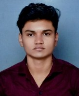

|  | Tushar ChaudhariAddress: Yavatmal, MaharashtraEmail:tusharchaudhari1809@gmail.com Phone: +91-7821848265 linkedin: linkedin.com/in/itusharchaudhari github: github.com/iTushar09 |
Aspiring Software Developer pursuing a B.Tech in Electronics and Telecommunication Engineering at SGGSIE&T, Nanded. Passionate about coding and problem-solving with skills in C, C++, Assembly, and Python. Committed to continuous learning and professional development. Seeking a position that offers opportunities for advanced training and career growth
| Shri Guru Gobind Singhji institute of Engineering and Technology Bachelor of Technology in Electronics and Telecommunication |
Nov 2022 – May 2026 CGPA: 6.5/10 |
| Shree Shivaji Junior College of Science Higher Secondary Certificate (HSC) |
Feb 2021 – March 2022 PERCENTAGE: 69/100 |
| Shree Shivaji High School Secondary School Certificate (SSC) |
Feb 2019 – March 2020 PERCENTAGE: 81/100 |